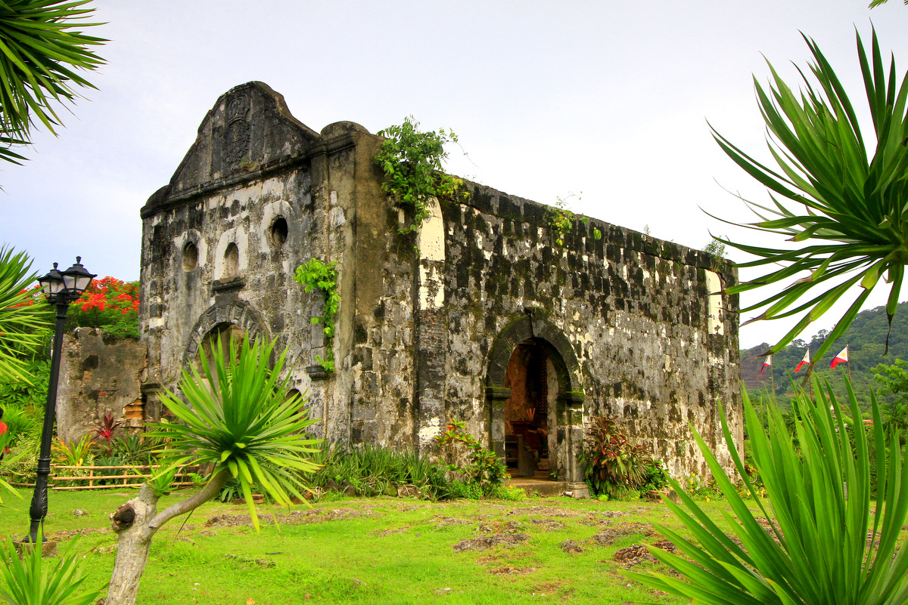
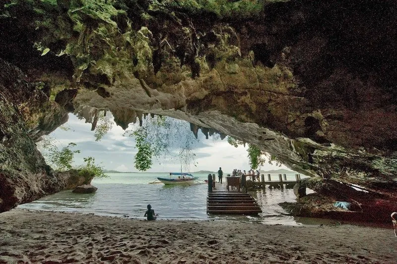
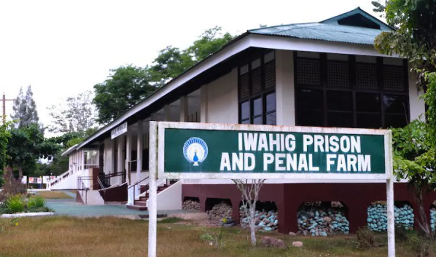

History of Palawan
47,000 years of human heritage
47,000 years of human heritage
The Tabon Caves on Quezon Island yielded the remains of "Tabon Man" — among the oldest human fossils in Southeast Asia, placing Palawan at the very cradle of Philippine prehistory. Tools, pottery, and burial jars reveal a sophisticated early civilization.
Long before Spanish colonization, Palawan's ports were busy nodes in a vast maritime trade network connecting China, Borneo, Java, and the Arab world. The Sultanate of Brunei extended influence over northern Palawan, while the Tagbanua and Palaw'an peoples developed sophisticated forest and sea cultures.
Ferdinand Magellan's expedition reached the Philippines in 1521. Spanish colonization of Palawan began gradually — the island's remoteness and resistance from Muslim and indigenous communities slowed the process considerably compared to other Philippine islands.
The Spanish colonial government constructed Fort Fuerza de Santa Isabel in Taytay to defend against Dutch pirates and Moro raiders. Taytay served as Palawan's capital for over two centuries. The fort's coral stone walls still stand today as one of Palawan's most important historical monuments.
Following the Spanish-American War, the Philippines came under American administration. Puerto Princesa was established as Palawan's new capital, and a penal colony (now the Iwahig Prison and Penal Farm) was founded in 1904 — still operating as an open-air rehabilitation farm today.
Palawan's biodiversity gained global recognition with the Puerto Princesa Underground River's UNESCO inscription (1999), the Tubbataha Reef Natural Park's UNESCO listing (1993), and the Underground River's New 7 Wonders of Nature award (2012). The Palawan Biosphere Reserve protects the island's extraordinary ecology.

Built 1667 by the Spanish, this coral stone fort was Palawan's main defense for 200 years. Today it offers panoramic views over Taytay Bay and the ruins of a colonial-era church inside its walls.

A UNESCO Tentative List site housing the oldest known human remains in the Philippines. The cave complex contains burial artifacts and tools from multiple prehistoric periods spanning tens of thousands of years.

A unique 1904-era American colonial open-air penal colony spanning 37,000 hectares. Today it operates as a rehabilitation farm where inmates live in relative freedom — a popular educational tourist attraction.